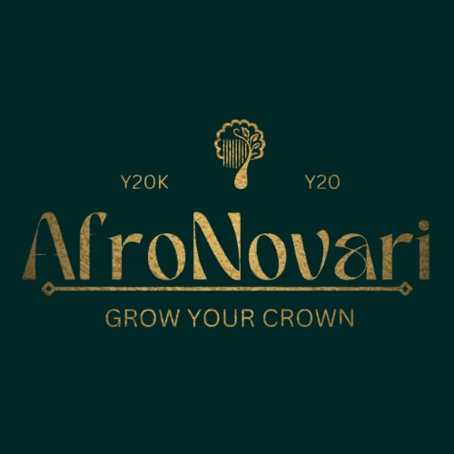

Building intelligent
systems. Creating
legacy.
Mind Legacies is a central intelligence holding company — not a single product or industry. We design, govern, and grow a portfolio of ventures built on the same principle: organisations built to outlast any one person.
We think deeper.
Systems designed to understand identity, not just behaviour.
We build the future.
Original architecture, protected and continuously refined.
We operate with honor.
Structured governance across every entity we build.
We create lasting impact.
Knowledge codified into systems that outlast any one person.
A central intelligence holding company — not a tech company.
Mind Legacies is a South African central intelligence holding company. We're not defined by one industry or one product — SYNAPSIS, our identity intelligence system, is one venture within a growing portfolio, not the whole of what we are. Our real product is the organisation itself: how it's designed, governed, and built to endure.
That design is grounded in tensegrity — the structural principle where stability comes from distributed tension and coordinated reinforcement, not a single rigid, centralised weight-bearing point. Every venture we build strengthens the ecosystem, and the ecosystem strengthens every venture in return.
Read our full company profile →The architecture starts with a person, so it doesn't have to depend on one.
"True legacy is not measured by how long a founder remains present, but by how well the organisation continues to thrive in their absence."
Mind Legacies was never intended to begin as a company. It began with a simple obsession: how do you build something that truly lasts?
Years ago, I started what I thought would be a single business — a hair care brand. Before launching products or thinking about commercial success, I became fascinated with building systems that could withstand change, uncertainty, growth, and time. I wanted the business to be able to outlast trends, challenges, and even the people leading it.
That curiosity quickly expanded beyond one company. Every new business idea raised the same question: how do you create organisations that are permanent, resilient, and capable of growing beyond the founder? Without realising it, I spent the next two to three years designing system after system — governance, operations, innovation, decision-making, knowledge, brand — until those ideas evolved into more than eighty interconnected intelligence systems spanning multiple disciplines and industries.
The turning point came when I discovered tensegrity — the structural principle of strength through interconnected balance rather than central dependence. It gave language to something I'd already been designing intuitively: an organisation capable of remaining coherent, adaptable, and resilient because every part strengthens the whole.
Only then did I realise I wasn't building independent businesses. I was building the foundation of a parent organisation. That realisation became Mind Legacies — a central intelligence holding company dedicated to designing, governing, and growing enduring organisations, built on the belief that great organisations aren't held together by founders. They're held together by intelligent systems.
The systems and ventures we've built.
Mind Legacies operates as the architecture and holding structure behind two distinct entities — one deployable today, one preparing to launch.

SYNAPSIS
Identity intelligence infrastructure that helps organisations understand not just what customers do, but who they are.
View SYNAPSIS →
AfroNovari
A premium Afro-futuristic haircare brand — "Grow Your Crown." Botanical performance meets emotionally intelligent design.
Learn more →